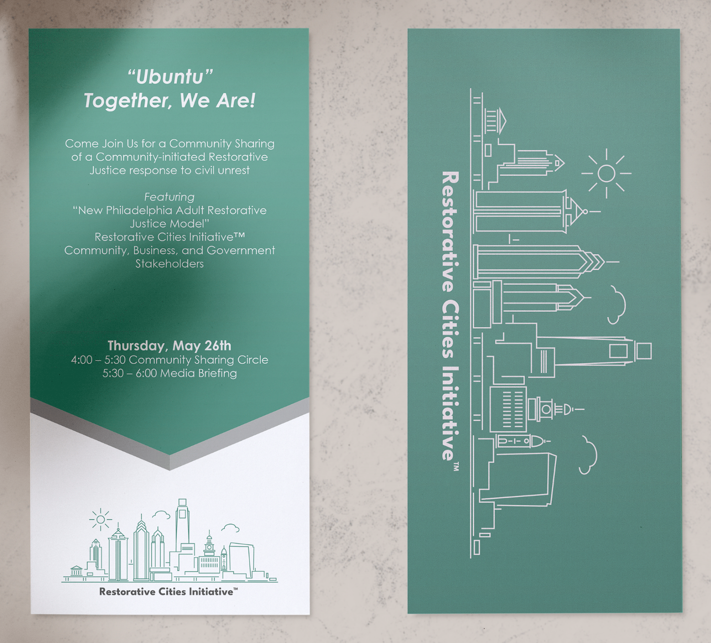

Restorative Justice Initiative
The Restorative Cities Initiative (RCI) is a process, a movement to help restore hope, unity, compassion, and connectedness to Philadelphia communities experiencing trauma and other adverse life events.
RCI trains and supports community stakeholders in addressing needs and resolving conflicts. Community stakeholders include neighbors, block captains, organizations, community leaders, police, businesses, clergy, schools, any and every one that lives, funds, serves, or supports a community in any capacity.
RCI held a two-part gathering which began first with an hour-long "community circle" dialogue with residents, the DA, members of City Council and others. The second hour was a presentation by the major players (MCCP, DA, et al) on their findings and plans for healing the community in the future.
I was tasked with developing marketing collateral for their two-part gathering event, including palm cards, posters, lawn signs and t-shirts.
